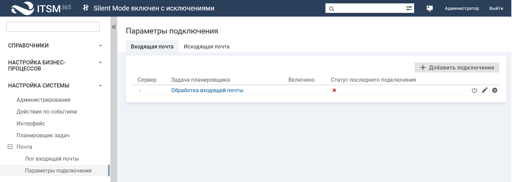

Настройка регистрации заявок по почте
Настройка регистрации заявок по почте
В системе существует возможность автоматической регистрации заявок на основе писем, поступивших на определенный электронный адрес.
При подключении к почтовому серверу система в процессе обработки почты прочитает все письма в папке, удалит их с почтового сервера и обработает каждое письмо в соответствии с правилом обработки почты:
- POP3 — в папке "Входящие" (inbox);
- IMAP4, EWS — в папке, указанной для сканирования.
Если вы хотите, чтобы письма не удалялись, то используйте подключения IMAP4 или EWS. Укажите для данных подключений Папку для писем без ошибок и Папку для писем с ошибками. Система будет размещать обработанные письма в указанные папки.
Если вам важны существующие письма, но их не нужно забирать в систему, то можно перенести их в другую папку (не inbox) перед подключением почты.
Чтобы использовать возможность регистрации заявок по почте, укажите параметры сервера входящей почты в настройках системы.
Чтобы указать параметры подключения к серверу входящей почты, в интерфейсе технолога перейдите в раздел "Настройка системы" → "Почта" → "Параметры подключения" (вкладка "Входящая почта") и укажите параметры подключения.
Подключение к серверу входящей почты возможно по протоколам POP3, IMAP и EWS.
| Параметры/Протокол | POP3 | IMAP4 | EWS |
|---|---|---|---|
| Сервер | IP адрес или DNS имя сервера, который используется для получения почты | Полный адрес до точки подключения к серверу Exchange, который используется для получения почты, включая протокол (http(s)://), например, https://имя_или_адрес_Exchange/ews/Exchange.asmx. | |
|
Порт |
Порт, соответствующий типу соединения (цифрами) |
— |
|
|
Логин |
Имя почтового ящика (электронный адрес почтового ящика) |
||
|
Пароль |
Пароль для доступа к почтовому ящику |
||
|
Протокол |
POP3 |
IMAP4 |
EWS (Exchange Web Services) |
|
SSL соединение |
Подключения к почтовому серверу с использованием защищенного соединения SSL (данное требование определяется настройками почтового сервера). По умолчанию SSL-соединение не используется (флажок снят) |
— |
|
|
Аутентификация OAuth2 |
—
|
Признак, включающий использование для авторизации протокола OAuth2. Данный тип аутентификации позволяет подключаться без использования пароля на прямую. Для подключения используются токены доступа полученные из AzureAD. Если флажок включен, то на форма отображаются дополнительные параметры: - Идентификатор приложения - Идентификатор каталога - Секрет клиента Значения параметров заполняются данными, полученными при регистрации приложения в Azure AD |
|
|
Папки для сканирования |
— |
Путь до папок, из которых будут забираться письма для обработки, в формате: "INBOX/<наименование папки>". Пути к папкам перечисляются через запятую ",", точку с запятой ";". В качестве разделителя пути используется слеш "\", "/". Если указана папка "INBOX", то обработке подлежат входящие письма из данной папки |
|

Вкладка "Входящая почта"
Подробное описание настройки регистрации заявок по электронной почте:
- Процесс регистрации заявок по электронной почте
- Настройка параметров входящей почты в интерфейсе технолога
- Настройка регистрации заявки незарегистрированным пользователем
- Быстрый старт. Шаг 5. Система готова к регистрации заявки, см.